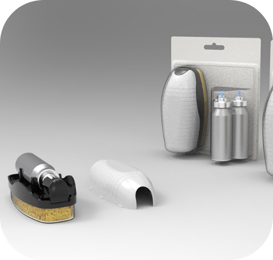

-
Rozwój Produktów
W dziale R&D Aerosol Service stawiamy na innowacyjność, a nasza praca opiera się na trzech podstawowych filarach. Przeprowadzamy dogłębne badania rynku, aby być na czele trendów i zaspokajać przyszłe potrzeby rynku. Słuchamy naszych klientów, poznając ich oczekiwania i zamieniając je w konkretne rozwiązania. Jesteśmy dumni z opartej na ich opinii współpracy, która inspiruje nas do tworzenia produktów o najwyższej jakości. Wraz z nami doświadczysz innowacyjności, która przekracza granice. Przyłącz się do naszej misji – razem tworzymy przyszłość.
-
Produkcja Kontraktowa
Jesteśmy ekspertami w napełnianiu różnorodnych pojemników, które obejmują m.in. aluminium, stal, szkło i tworzywo PET. Nasza pasja do precyzji i doskonałości sprawia, że dostarczamy usługi najwyższej jakości. Niezależnie od Twoich potrzeb i specyfikacji, oferujemy rozwiązania dostosowane do Twojego produktu. Przejdź na wyższy poziom z naszą elastyczną usługą produkcji kontraktowej.

-
Marki Własne
Tworzymy wyjątkowe produkty, bazując na naszych własnych recepturach, które spełniają Twoje unikalne wymagania. Twoja marka otrzymuje produkty o niezrównanej jakości i autentycznym charakterze. Przejdź na wyższy poziom z naszą elastyczną i profesjonalną usługą dla marek własnych, która buduje lojalność klientów i zapewnia sukces.
-
Produkcja Opakowań
Produkujemy wysokiej jakości pojemniki aluminiowe. Zapewniamy kompleksową usługę dostarczania twoich produktów, dzięki własnym liniom produkcji opakowań, napełniania, a także doświadczonemu działowi R&D. Dzięki nam twój produkt zostanie wykonany od A do Z w jednym miejscu, co ma ogromny wpływ na jakość oraz termin wykonywanych usług.


Nasze innowacje
-
Actuo
Actuo to pierwszy aplikator, którym można operować przy użyciu jednej ręki, bez konieczności trzymania puszki. Niespotykany design sprawia, że aplikacja jest jeszcze prostsza i pomaga zachować produkt w czystości, zapewniając przy tym lepszą higienę podczas użytku. Actuo pasuje niemal do każdej wielkości opakowania i może być użyte do wielu rodzajów produktów w formie musu, pianki lub żelu.
-
Spray’n’Use
SPRAY ’N’ USE APPLICATOR to produkt 2 w 1. Zawiera wymienne mini-spraye aerozolowe i aplikator dobrany pod specjalne potrzeby. Charakteryzuje się swoim kieszonkowym designem, łatwością użytku i precyzyjną aplikacją. Brak bezpośredniego kontaktu produktu z rękami zapewnia czystość i bezpieczeństwo. Produkt jest hermetycznie zamknięty, dzięki czemu nie wysycha ani nie wylewa się.
- 
-
Lesso
Lesso to aplikator dawkowy zaprojektowany specjalnie pod aerozole skompresowane oraz w technologii BOV. Jego głównym celem jest nauczanie konsumentów świadomego korzystania z produktu. Pojedyncza aplikacja wystarczy! Użytkowanie Lesso jest bardzo proste. Po naciśnięciu palcem jednej ze stron aplikator obróci się. Specjalny design aplikatora pozwoli chwilowo otworzyć zawór i zaaplikować odpowiednią ilość produktu.
-
Refillme
Refillme to pierwsze rozwiązanie na rynku umożliwiające uzupełnianie aerozoli. Produkt występuje w postaci puszki aluminiowej oraz doypacka, co pozwala na uzupełnianie oryginalnego produktu w sposób sprzyjający filozofii zero waste. Ta przyjazna ekologii innowacja może być używana z wieloma rodzajami produktów z różnym przeznaczeniem.